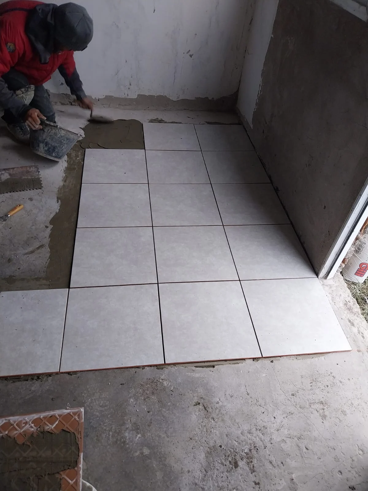

Viviendas
Tu casa, desde el primer paso.
Construcción tradicional con ladrillo visto y madera. Partimos de modelos de 35, 40, 55 y 70 m² para conversar sobre la distribución que necesitás.
- Primera vivienda
- Modelos base y propuesta a medida
Nuestros servicios
Viviendas, ampliaciones y quinchos en Bahía Blanca y la zona.
Viviendas
Construcción tradicional con ladrillo visto y madera. Partimos de modelos de 35, 40, 55 y 70 m² para conversar sobre la distribución que necesitás.

Ampliaciones
Sumamos ambientes a tu vivienda con una propuesta que contemple el uso, el espacio disponible y la relación con lo que ya está construido.

Quinchos
Espacios de encuentro con el carácter del ladrillo y la calidez de la madera. Definimos juntos las dimensiones y las terminaciones del proyecto.

Llave en mano
Coordinamos las etapas del proyecto, desde los planos municipales hasta las terminaciones. Los trabajos, el precio y los plazos se acuerdan por contrato.
Con las condiciones claras
La propuesta de la empresa contempla viviendas terminadas en 90 días hábiles. Confirmamos el alcance y los plazos para tu proyecto al contratar.
El anticipo se destina al acopio de materiales. Los importes, las condiciones y lo incluido quedan definidos en el contrato.
Desde los planos municipales hasta la pintura final, con las tareas y terminaciones acordadas para cada obra.